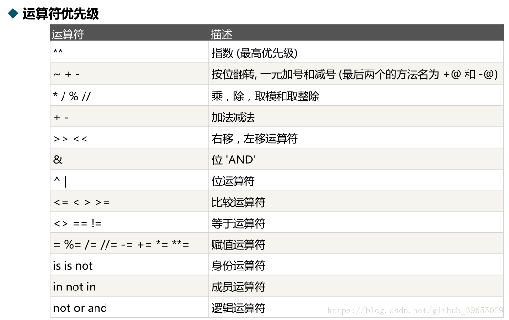
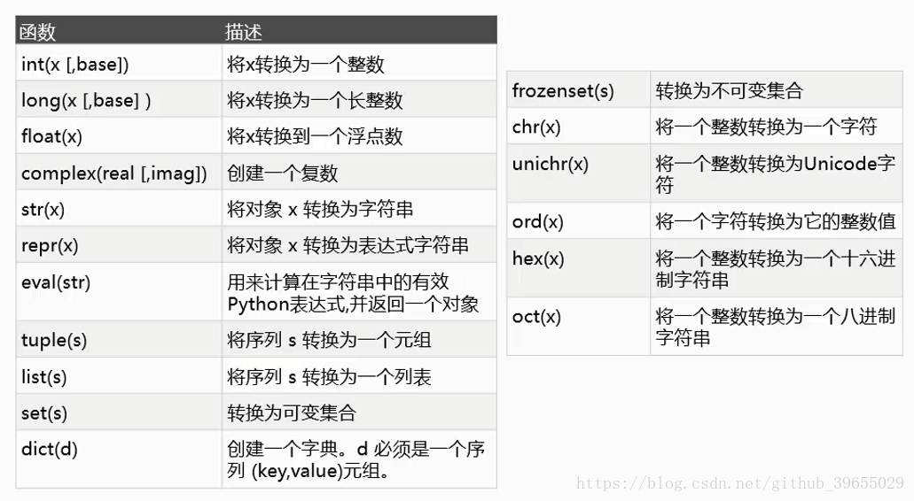
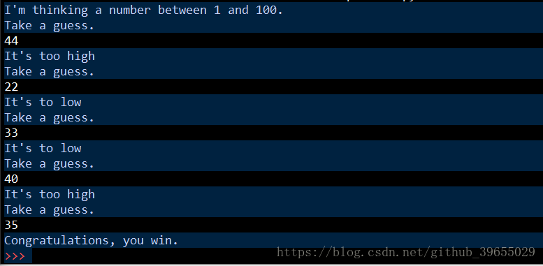
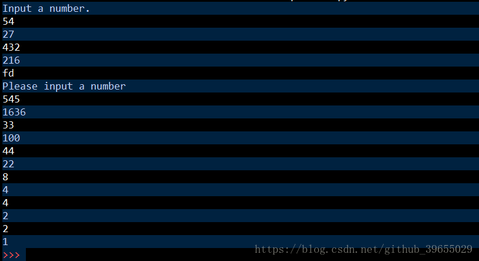

Python基础
int；float；bool，True和False；complex；int、bool、float、complex，long(2, x)；str；tuple；list；dict；不能以数字开头；
**：代表指数，eg：2 ** 3 = 8;/：代表除法，eg：22 / 8 = 2.75；//：代表整除/商数取整，eg：22 / 8 = 2；*：用于两个整形或浮点型值时，表示乘法，但用于字符串值和一个整形值时，它则变成了'字符串复制'操作符；
>>>提示符；>>>提示符；#这是单行注释；'''或者三个双引号 """将注释括起来;'''这是
多行注释；'''"""这是多行
注释;""">>>42 == 42.0
True#!：常用于Unix系统脚本中的第一行开头使用，用于知名执行这个脚本文件的解释程序；#! /usr/bin/python3
数据类型转换

float('inf') #正无穷
float('-inf') #负无穷inf乘以0得到一个not-a-number(NaN)，NaN与inf的区别：inf数的significant部分为0，而NaN数的significant部分部位0；控制流
Boolean，只有True和False；and、或or、非not；函数
>>> spam = print('hello')
hello
>>> None == spam
TrueNone；object；tuple；参数组：
```python
def test(*args):
print(args)
test(1, 3, 4)
(1, 3, 4)
```
# 参数组返回的是字典
def test2(**kwargs):
print(kwargs)
>>> test2(name = 'k', age = 4, sex = 'M')
{'name':'k', 'age':4, 'sex':'M'}调用函数时，实质上传递的是实参保存数据的引用，而不是实参保存的数据；
位置参数和关键字：标准调用与形参位置一一对应；关键字调用无序固定；关键字参数必须在位置参数后边；
+=不是进行相加再赋值的操作，本质上是调用列表的extend方法；*可接收元祖，常命名为*args；*可接受字典，常命名为**kwargs；args，则在元祖变量前增加一个*；kwargs，则在字典变量前增加两个**；eggs = 'global'
def spam():
global eggs
eggs = 'spam'
spam()
print(eggs)
-----------
spam
-----------try和except语句处理；def spam(divideBy):
try:
return 43 / divideBy
except ZeroDivisionError:
print('Error:Invalid argument.')#小程序：猜数字,不断循环，直到你猜出这个数
guessNumber = random.randint(1,100)
print("I'm thinking a number between 1 and 100.")
while True:
print('Take a guess.')
guess = int(input())
if guess > guessNumber:
print("It's too high")
elif guess < guessNumber:
print("It's to low")
else:
print("Congratulations, you win.")
break
#Collatz序列
def collatz(number):
if (number % 2 == 0):
return number / 2
else:
return number * 3 + 1
print('Input a number.')
while True:
global number1
try:
number1 = int(input())
except ValueError:
print('Please input a number')
continue
if collatz(number1) != 1:
print(int(collatz(number1)))
else:
print(int(collatz(number1)))
break
欢迎关注微信公众号：村雨1943；创作不易，未经同意，转载请注明出处~